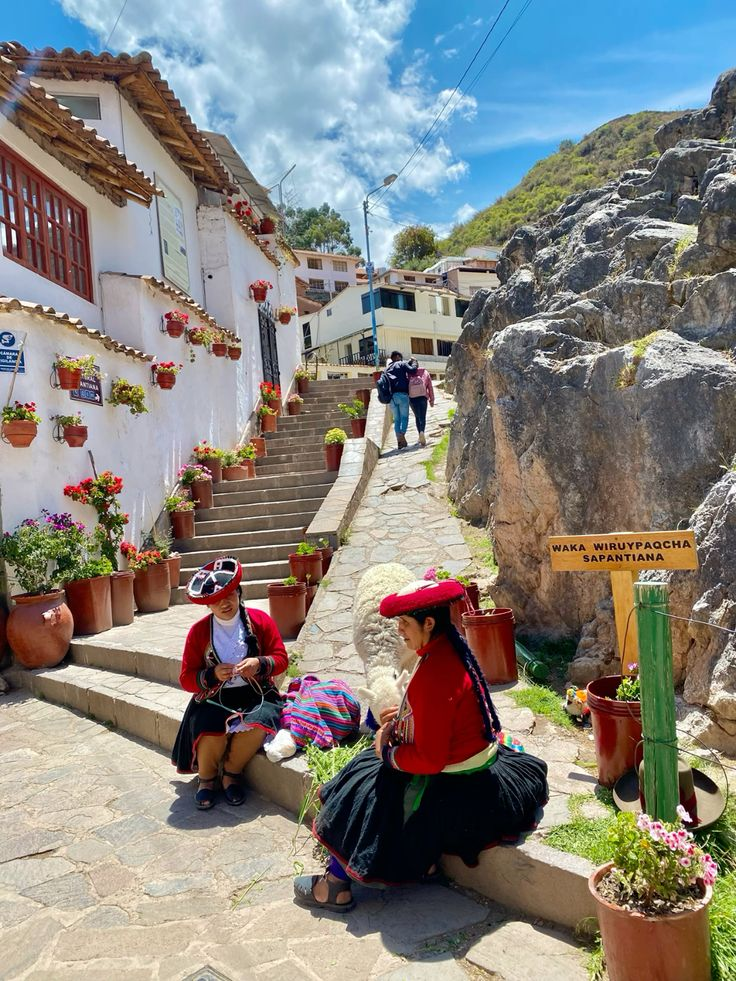

Safety Tips for Solo Female Travelers in South America
South America offers incredible destinations, but it's important to stay safe while exploring the region. Here are some safety tips tailored to solo female travelers:
- Research Local Safety: Before heading to a new city or country, research the safety situation for women travelers. Some areas are safer than others, and understanding local dynamics can help you avoid risky situations.
- Use Trusted Transportation: Opt for trusted transportation options like reputable taxi services or ride-sharing apps (Uber, Lyft). Public transport can be risky in certain areas, especially after dark.
- Stay in Well-Populated Areas: Choose accommodations that are well-reviewed, in central areas, and near popular tourist attractions. This ensures more foot traffic and helps keep you safe.
- Beware of Street Scams: In crowded areas, be aware of common scams like distractions or pickpockets. Stay alert and keep your valuables hidden.
- Trust Your Instincts: If you ever feel uncomfortable, don't hesitate to leave the situation, whether it's a local interaction or a questionable transportation option.
For more detailed safety tips in South America, check out these resources:
Solo-Friendly Activities to Enjoy in South America
South America is home to vibrant cultures, diverse landscapes, and unforgettable adventures. Here are some solo-friendly activities to enjoy while traveling solo in this incredible region:
- Hiking in the Andes: The Andes mountain range offers some of the best hiking trails in the world. Consider hiking to Machu Picchu in Peru or exploring the stunning Patagonia region in Chile and Argentina. Solo hiking is common, but always go with a guide if you’re not experienced.
- Exploring the Amazon Rainforest: Take guided tours through the Amazon Rainforest in Brazil or Peru. These tours can provide you with a safe way to explore the wild while learning from local experts about the ecosystem.
- Cultural Tours in Buenos Aires: Solo travelers often enjoy Buenos Aires for its rich cultural experiences. Take a tango lesson, explore the city's art museums, or walk around vibrant neighborhoods like La Boca.
- Visiting Iguazu Falls: A stunning natural wonder located on the border between Brazil and Argentina, Iguazu Falls offers breathtaking views. It’s a safe destination for solo travelers with plenty of guided tours available.
Find solo-friendly tours and activities through these resources:
Cultural Insights for Solo Female Travelers in South America
Understanding local customs and traditions in South America will make your journey more enriching. Here are some cultural insights to keep in mind:
- Respect Local Dress Codes: Many South American countries have specific dress codes, especially in rural or religious areas. It's essential to dress modestly when visiting churches, temples, or indigenous communities.
- Learn Basic Spanish or Portuguese: Knowing a few basic phrases in Spanish (or Portuguese in Brazil) will go a long way in building rapport with locals. Simple greetings, "please," and "thank you" will show respect.
- Solo Travel and Gender Norms: In certain parts of South America, traditional gender norms may affect how women are perceived when traveling alone. Understanding and respecting these norms will help ensure a smoother experience.
- Embrace the Local Food Culture: In some countries, it’s common for women to eat in groups, especially in more traditional areas. However, larger cities like Buenos Aires or Rio de Janeiro have vibrant solo dining cultures. Don’t be afraid to try local dishes at small cafes or markets!

For deeper insights into South American cultures, visit these websites: